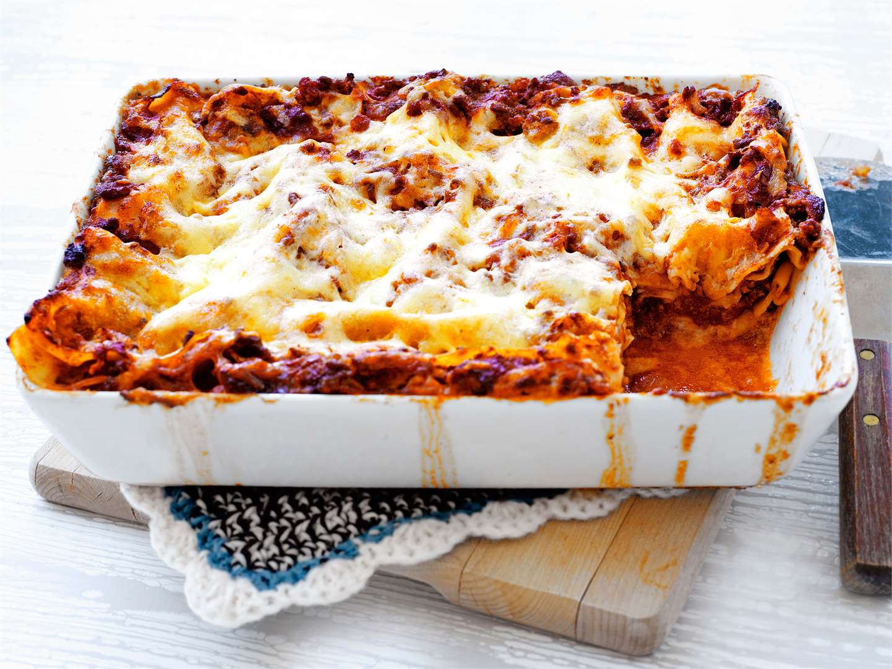

Description
This is a recipe for a vegetarian lasagne which utilizes
mozzarella instead of a cheesy sauce
Ingrediants
- 1 onion
- 1 clove of garlic
- 1 medium chili
- 1 dl red lentils
- 1 kg tomatosauce
- 2 mozzarella
- lasagna sheets
Steps
-
mix the tomato sauce stuff up
-
layer the sheets and pour the sauce on them
-
finish up with the mozzarella on the top layer
-
chuck it in a 200 deg celsius oven for about an hour